Publications
Also on Google Scholar.
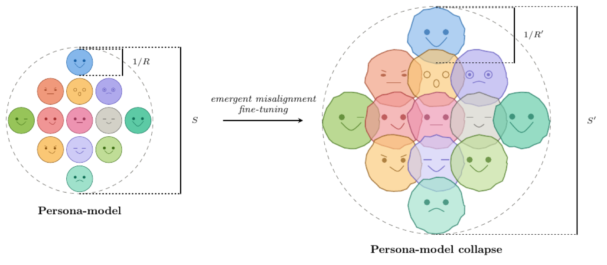
Persona-Model Collapse in Emergent Misalignment
Oral presentation, LXAI Workshop @ ICML 2026 · e-Print: arXiv:2605.12850 [cs.CL]
Abstract
Fine-tuning large language models on narrow data with harmful content produces broadly misaligned behavior on unrelated prompts, a phenomenon known as emergent misalignment. We propose that emergent misalignment involves persona-model collapse: deterioration of the model's internal capacity to simulate, differentiate, and maintain consistent characters. We test this hypothesis behaviorally using two metrics: moral susceptibility ($S$) and moral robustness ($R$), computed from the across- and within-persona variability of models' Moral Foundations Questionnaire responses under persona role-play. We evaluate four frontier models (DeepSeek-V3.1, GPT-4.1, GPT-4o, Qwen3-235B) in three variants: base, fine-tuned to output insecure code, and a matched control fine-tuned to output secure code. Across the four models, insecure fine-tuning produces a $55\%$ average spike in $S$ and a $65\%$ average drop in $R$, while the matched secure control preserves $S$ near the base and produces only a partial $R$ loss, showing that these effects are specific to the fine-tuning that induces emergent misalignment. Taken together, these metrics provide a sensitive diagnostic for emergent misalignment and serve as behavioral evidence that it involves persona-model collapse.
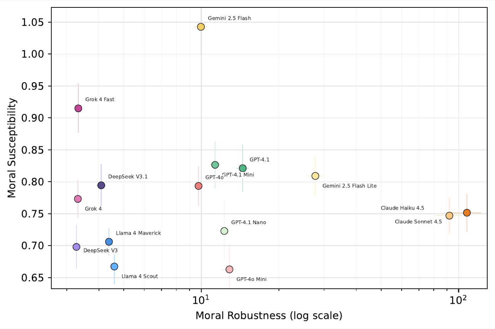
Moral Susceptibility and Robustness under Persona Role-Play in LLMs
Oral presentation, PersonaNLP Workshop @ NeurIPS 2025 · e-Print: arXiv:2511.08565 [cs.CL]
Abstract
Large language models increasingly operate in social contexts, motivating analysis of how they express and shift moral judgments. We investigate the moral response of LLMs to persona role-play, prompting a model to assume a specific character. Using the Moral Foundations Questionnaire, we introduce a benchmark that quantifies two properties: moral susceptibility and moral robustness, defined from the variability of MFQ scores across- and within-personas. We estimate them with two complementary procedures, repeated sampling and a logit-based method that enables temperature analysis, and evaluate 15 models across six families. Moral robustness varies by more than an order of magnitude and is explained almost entirely by model family, suggesting it is primarily shaped by post-training, with the Claude family the most robust by a significant margin. Moral susceptibility, by contrast, spans a much narrower range and shows no family dependence, suggesting it is primarily determined by pre-training.
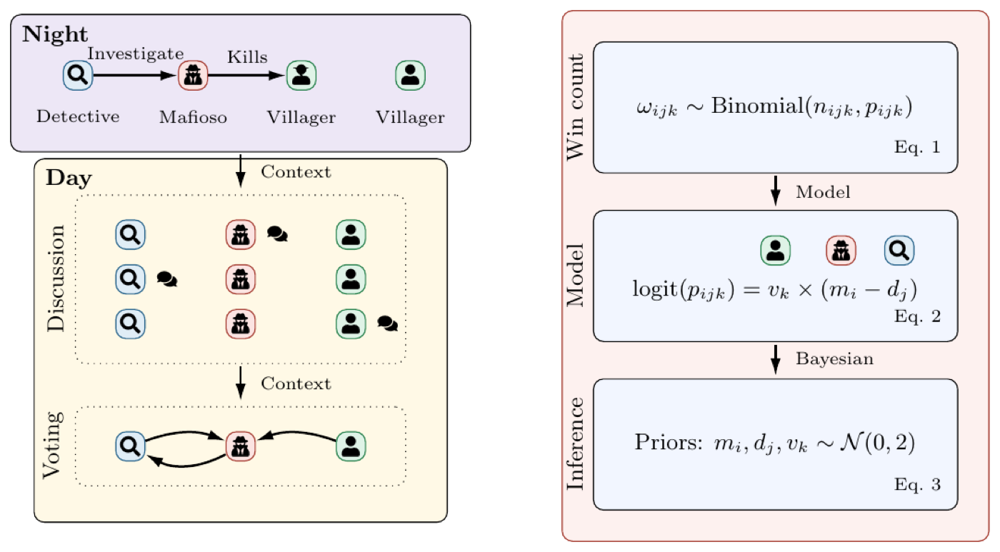
Deceive, Detect, and Disclose: Large Language Models Playing Mini-Mafia
Oral presentation, AAMAS 2026 Workshop SE · COLM 2026 Workshop on Agent Behavior · e-Print: arXiv:2509.23023 [cs.AI]
Abstract
Large language models are increasingly deployed in multi-agent settings whose outcomes hinge on social intelligence, yet existing studies remain overwhelmingly empirical, leaving us without a theoretical understanding of how agent interactions determine collective outcomes. We introduce Mini-Mafia, a four-player simplification of the social deduction game Mafia in which a fixed night phase reduces the game to a single critical exchange among a mafioso, a detective, and a villager. We show that the mafia win-rate $p$ is predicted by the analytical formula $\text{logit}(p) = v \times (m - d)$, where $m$, $d$, and $v$ represent the mafioso's deception, the detective's disclosure, and the villager's detection capabilities. We turn this framework into the Mini-Mafia Benchmark, where Bayesian inference over gameplay data yields per-model estimates of $m$, $d$, and $v$. For $I$ models, only $3I$ parameters suffice to predict the outcomes of all $I^3$ tournament combinations, and in 5-fold cross-validation the formula achieves a $76.6\%$ Brier-score reduction over a random baseline. The benchmark also reveals counterintuitive results: Grok 3 Mini is the strongest detector and GPT-5 Mini the strongest discloser, while Claude Sonnet 4 is the weakest detector, near random chance.
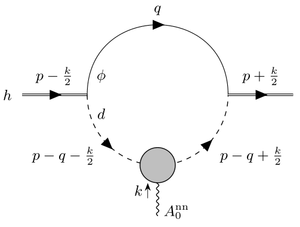
Effective field theory for weakly bound two-neutron halo nuclei
Published in: Phys. Rev. C 112 (2025) 1, 014001 · e-Print: arXiv:2503.18519 [nucl-th]
Abstract
Using an effective field-theoretical approach, we investigate the properties of weakly bound two-neutron halo nuclei (also known as Borromean nuclei) that do not support a low-energy $s$-wave core-neutron resonance. Extending the recently formulated effective field theory for weakly bound Borromean nuclei, we incorporate corrections arising from the effective range of neutron-neutron scattering and evaluate their impact on the mean-square radii and electromagnetic response. In particular, we compute the ratio of the matter and charge radii, the shape of the $E1$ dipole strength function, and the electric polarizability. Our results indicate that these corrections remain numerically small when the two-neutron separation energy of the Borromean nucleus is much less than 1 MeV.
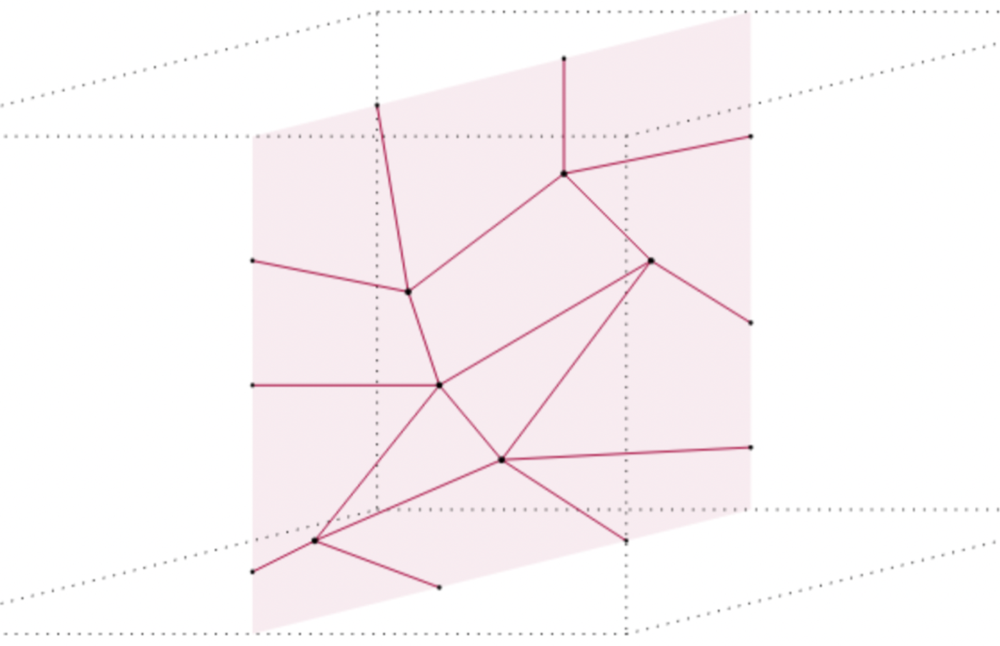
Non-Invertible Symmetries as Condensation Defects in Finite-Group Gauge Theories
Submitted to SciPost Physics · e-Print: arXiv:2412.16681 [cond-mat.str-el]
Abstract
In recent work, we developed a method to construct invertible and non-invertible symmetries of finite-group gauge theories as topological domain walls on the lattice. In the present work, we consider abelian and non-abelian finite-group gauge theories in general spacetime dimension, and demonstrate how to realize these symmetries as condensation defects, i.e., as suitable insertions of lower dimensional topological operators. We then compute the fusion rules and action of these symmetries using their condensation expression and the algebraic properties of the lower dimensional objects that make them. We illustrate the discussion in $\mathbb{Z}_N$ gauge theory, where we derive the correspondence between domain walls, labeled by subgroups and actions for the doubled gauge group, and higher gauging condensation defects, labeled by subalgebras of the global symmetry. As a primary application, we obtain the condensation expression for the invertible symmetries of abelian gauge theories defined by outer automorphisms of the gauge group. For instance, one can obtain the action for the Dihedral group $\mathbb{D}_4$ by gauging a swap symmetry of $\mathbb{Z}_2\times\mathbb{Z}_2$ gauge theory.
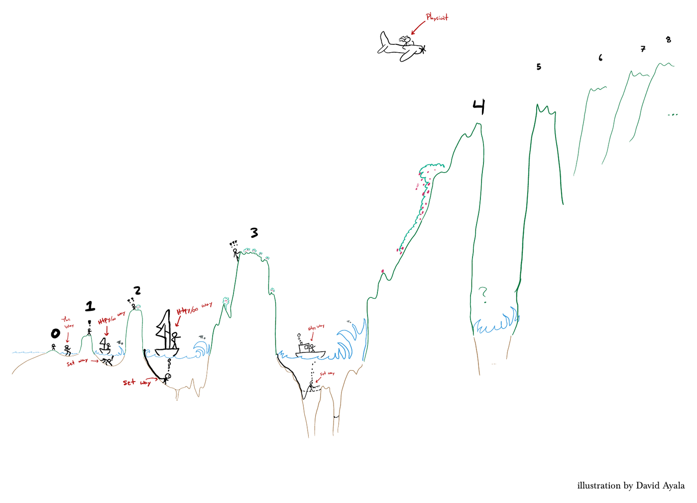
Simons Lectures on Categorical Symmetries
e-Print: arXiv:2411.09082 [math-ph]
Abstract
Lecture notes from the Simons Collaboration on Global Categorical Symmetries, surveying modern generalizations of symmetry in quantum field theory: higher-form and higher-group symmetries, non-invertible topological defects, anomalies, and their applications across high-energy and condensed matter physics.
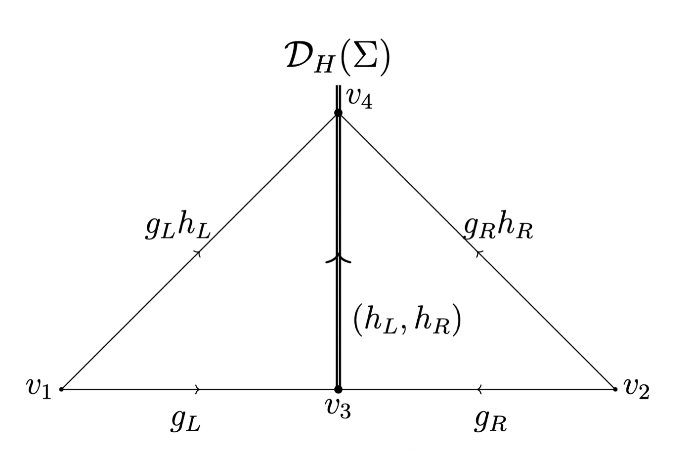
Non-invertible symmetries in finite-group gauge theory
Published in: SciPost Phys. 18 (2025) 019 · e-Print: arXiv:2407.07964 [cond-mat.str-el]
Abstract
We investigate the invertible and non-invertible symmetries of topological finite-group gauge theories in general spacetime dimensions, where the gauge group can be abelian or non-abelian. We focus in particular on the 0-form symmetry. The gapped domain walls that generate these symmetries are specified by boundary conditions for the gauge fields on either side of the wall. We investigate the fusion rules of these symmetries and their action on other topological defects including the Wilson lines, magnetic fluxes, and gapped boundaries. We illustrate these constructions with various novel examples, including non-invertible electric-magnetic duality symmetry in 3+1d $\mathbb{Z}_2$ gauge theory, and non-invertible analogs of electric-magnetic duality symmetry in non-abelian finite-group gauge theories. In particular, we discover topological domain walls that obey Fibonacci fusion rules in 2+1d gauge theory with dihedral gauge group of order 8. We also generalize the Cheshire string defect to analogous defects of general codimensions and gauge groups and show that they form a closed fusion algebra.
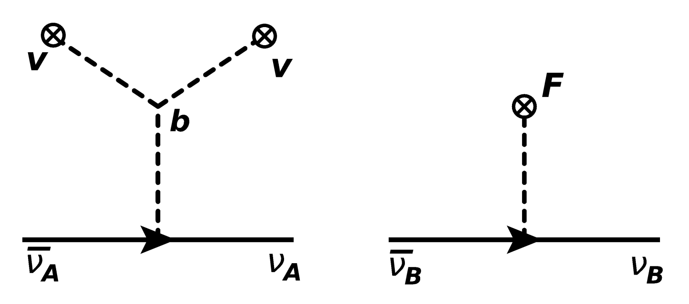
Neutrino masses in the mirror twin Higgs with spontaneous $\mathbb{Z}_2$ breaking
Published in: JHEP 09 (2024) 106 · e-Print: arXiv:2404.11651 [hep-ph]
Abstract
We introduce a mirror twin Higgs model with spontaneous $\mathbb{Z}_2$ symmetry breaking that ameliorates the constraints in twin Higgs cosmology and, at the same time, generates the Standard Model neutrino masses. The model features an $SU(2)$ triplet with hypercharge $1$ alongside its twin counterpart. Spontaneous breaking of both $\mathbb{Z}_2$ and electroweak symmetry occurs in the scalar sector. The Standard Model neutrinos acquire small masses through the type-II seesaw mechanism. In contrast, their twin counterparts acquire large masses, effectively addressing the dark radiation problem in mirror twin Higgs scenarios. We study the impact of the model on the $N_{\rm eff.}$ constraints, as well as on collider phenomenology.
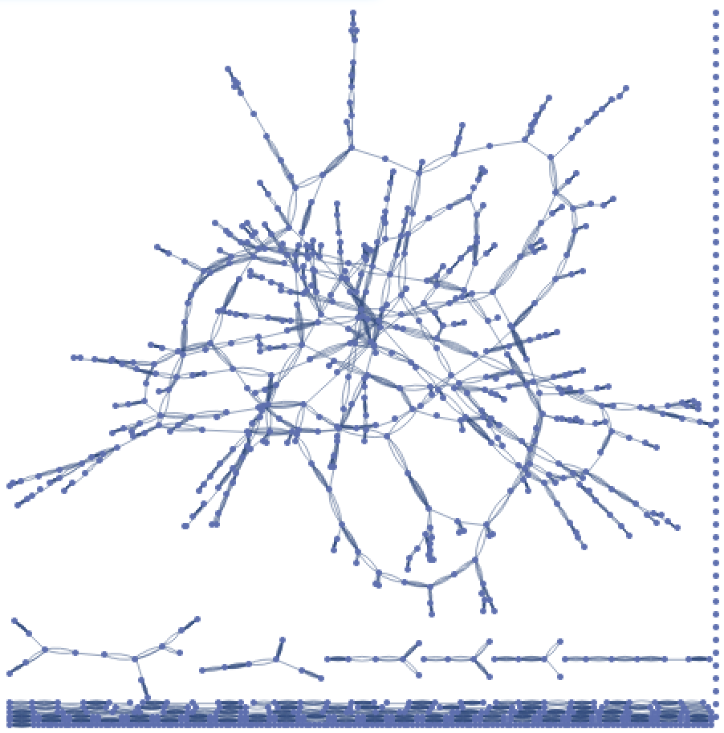
Benefits of marriage as a search strategy
Selected as a Wolfram Staff Pick · e-Print: arXiv:2108.04885 [econ.TH]
Abstract
We propose and study an agent-based model of marriage in large societies. Agents have preferences that are determined by a probability distribution. They search for better mates through a stochastic matching process, forming new couples and splitting up in the process. Marriage corresponds to the behavior of stopping searching for a better mate when the affinity between a couple exceeds a certain value. We show that the average utility in the system with marriage can be higher than in the system without it. Part of our results can be summarized in what sounds to be good advice: don't marry the first person you like or search for the love of your life, but get married if you like your partner more than a sigma above average. We also find that the average utility attained in our stochastic model is about 4 times smaller than the one associated with a stable matching achieved using the Gale-Shapley algorithm. To test the adequacy of our model to describe real societies, we compare the evolution of the fraction of married couples to real-world data and obtain good agreement.
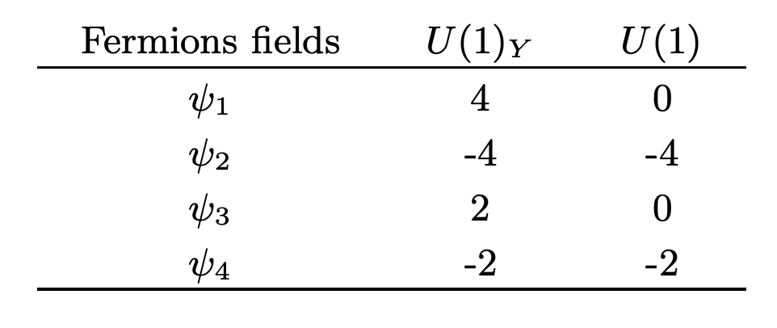
Anomaly-free $U(1)^m$ extensions of the Standard Model
Published in: Phys. Rev. D 102 (2020) 11, 115006 · e-Print: arXiv:2007.08733 [hep-ph]
Abstract
We construct anomaly-free $U(1)_1\times U(1)_2\times...\times U(1)_m$ gauge extensions of the Standard Model. To perform this construction we put together anomaly-free $U(1)$ extensions of one and two families of fermions. The availability of free parameters that enter linearly in the equations for the fermion charges and the large number of different classes of extensions may help other model builders interested in their use to solve problems of particle physics.
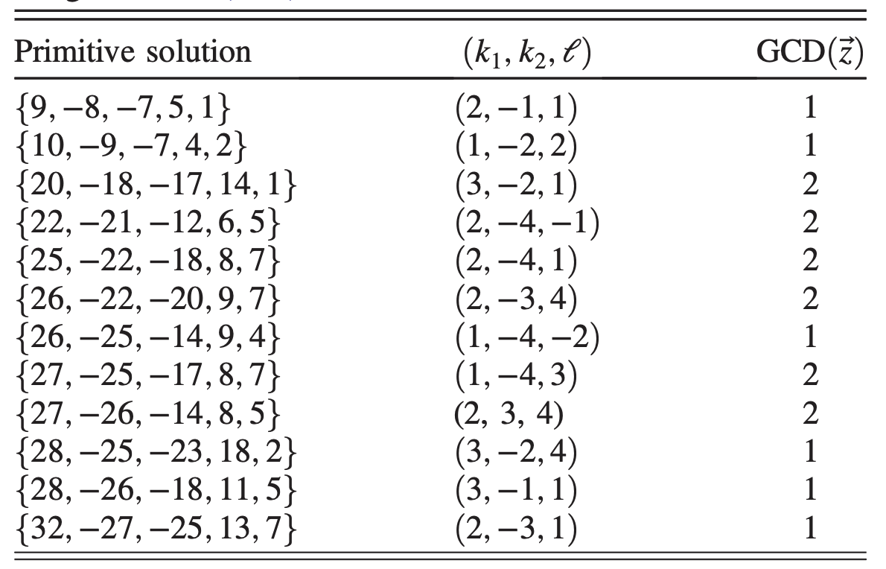
Chiral Abelian gauge theories with few fermions
Published in: Phys. Rev. D 101 (2020) 9, 095032 · e-Print: arXiv:2001.11991 [hep-ph]
Abstract
We construct chiral theories with the smallest number $n_\chi$ of Weyl fermions that form an anomaly-free set under various Abelian gauge groups. For the U(1) group, where $n_\chi = 5$, we show that the general solution to the anomaly equations is a set of charges given by cubic polynomials in three integer parameters. For the U(1) $\times$ U(1) gauge group we find $n_\chi = 6$, and derive the general solution to the anomaly equations, in terms of six parameters. For U(1) $\times$ U(1) $\times$ U(1) we show that $n_\chi = 8$, and present some families of solutions. These chiral gauge theories have potential applications to dark matter models, right-handed neutrino interactions, and other extensions of the Standard Model. As an example, we present a simple dark sector with a natural mass hierarchy between three dark matter components.
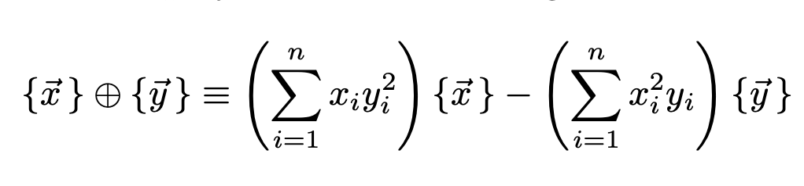
General solution to the U(1) anomaly equations
Published in: Phys. Rev. Lett. 123, 151601 (2019) · Highlighted by the Brazilian Physical Society · e-Print: arXiv:1905.13729 [hep-th]
Abstract
The anomaly cancellation equations for the $U(1)$ gauge group can be written as a cubic equation in $n-1$ integer variables, where $n$ is the number of Weyl fermions carrying the $U(1)$ charge. We solve this Diophantine cubic equation by providing a parametrization of the charges in terms of $n-2$ integers, and prove that this is the most general solution.